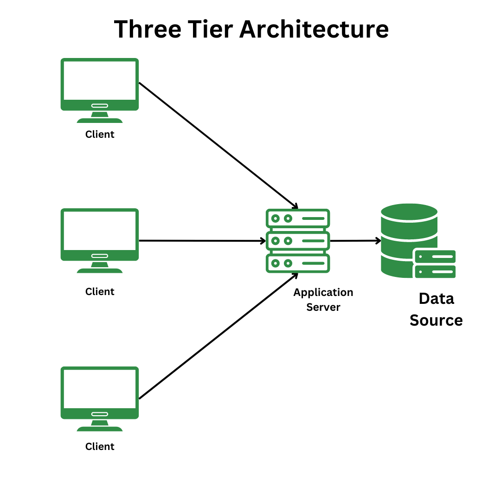

Multitier Architecture
Multitier architecture, also known as n-tier architecture, is a software design pattern that separates an application into multiple layers or tiers, each responsible for specific functionality. This architecture promotes modularity, scalability, and maintainability by dividing the application into distinct components that can be developed, deployed, and managed independently.
In a typical multitier architecture, there are three main tiers:
- Presentation Tier: This is the topmost layer that interacts with the user. It is responsible for displaying the user interface and handling user input. Technologies used in this tier include HTML, CSS, JavaScript, and various front-end frameworks.
- Application Tier: This middle layer contains the business logic of the application. It processes user requests, performs calculations, and makes decisions based on the application's rules. Common technologies for this tier include server-side programming languages like Java, C#, Python, and frameworks such as Spring or .NET.
- Data Tier: This bottom layer is responsible for data storage and management. It interacts with databases to store and retrieve data as needed by the application. Technologies used in this tier include relational databases like MySQL, PostgreSQL, and NoSQL databases like MongoDB.
Multitier architecture allows for better separation of concerns, making it easier to maintain and scale applications. Each tier can be developed and updated independently, which enhances flexibility and reduces the risk of introducing bugs when making changes. Additionally, this architecture can improve performance by allowing different tiers to be optimized for their specific tasks.
Benefits of Multitier Architecture:
- Scalability: Each tier can be scaled independently based on demand.
- Maintainability: Changes to one tier do not affect others, making updates easier.
- Reusability: Business logic can be reused across different presentation layers.
- Security: Each tier can have its own security measures, protecting sensitive data.
- Flexibility: Different technologies can be used for each tier based on requirements.

Three-Tier Architecture Model
← Back to Glossary